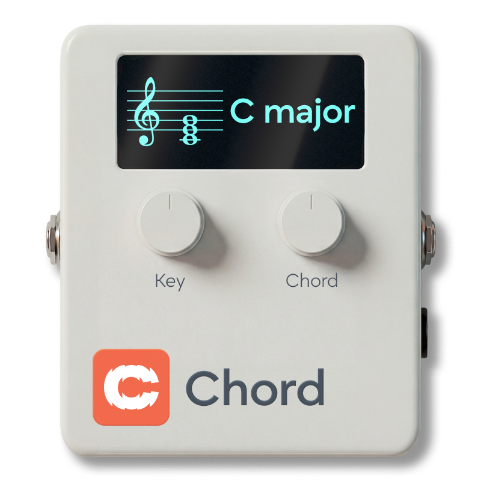
| Category | Utilities |
| Channels | Stereo in / stereo out (sum-to-mono on Anagram — see note) |
| Version | 1.01 (06/04/2026) |
Cognate Chord is a chord reference and practice companion. Dial in a key and a chord type and it holds the harmony for you, using one of four beautiful sustained voices — synth pad, strings, tanpura drone, or Hammond organ. Autofade brings the chord in when you start playing and fades it out when you stop; Ducking pulls it under your notes so it meets your line in waves rather than fighting it. Pair it with Cognate Metro for a complete no-fuss practice rig.
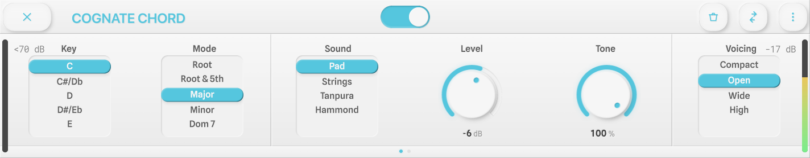
Page 1 of 2
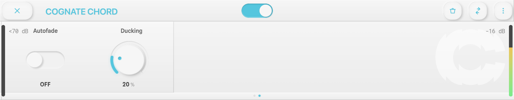
Page 2 of 2
Silences the chord and passes your bass straight through to the next block in the signal chain. The plugin stays in your preset, so you can toggle the chord in and out without having to reload anything.
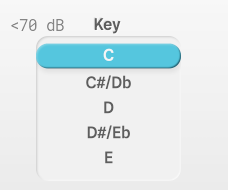
Selects the root note of the chord. Combine with Mode to build a complete chord — e.g. Key A + Mode Minor 7 gives you Am7. Covers all seven natural notes; for sharps and flats, pick the nearest and re-voice with the chord type (e.g. F# minor = F# but you can also think of it as D major's relative minor).
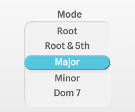
Chord quality, from a bare root note up to altered jazz chords. Covers everything you're likely to reach for in pop, rock, and jazz practice.
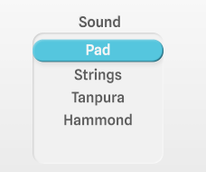
The voice used to play the chord. Each one has subtle internal movement so it stays interesting across long practice sessions.
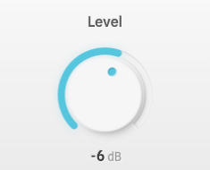
-40 = "-Inf"Volume of the chord, relative to your bass. Set it loud enough to hear clearly but quiet enough that your own playing still dominates. Turning fully down (-Inf) silences the chord without disabling the plugin.
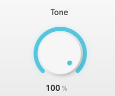
Brightness of the chord sound. Full up is the voice as intended — warm but present. Roll it back to tuck the chord further into the background, useful when the Pad or Tanpura are already feeling too rich under your line.
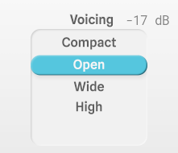
How the chord is distributed across octaves. Pick the voicing that best gets out of the way of the register you're playing in.
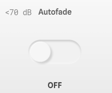
When on, the chord fades in when you start playing and fades out again when you stop. Makes the chord feel like an accompanist that knows when to join in and when to pause, instead of a constant drone. Turn it off to hear the chord continuously — useful for extended intonation work or when you need an unbroken harmonic reference.
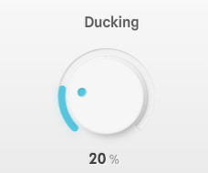
How much the chord drops in volume while you're playing. At 0% the chord holds its full level regardless; as you increase, the chord sidechains out of your way and returns as soon as you pause. A setting around 20% (the default) is enough to stop the chord crowding your notes without burying it. Paired with Autofade, the chord rises and falls in natural waves around your playing.